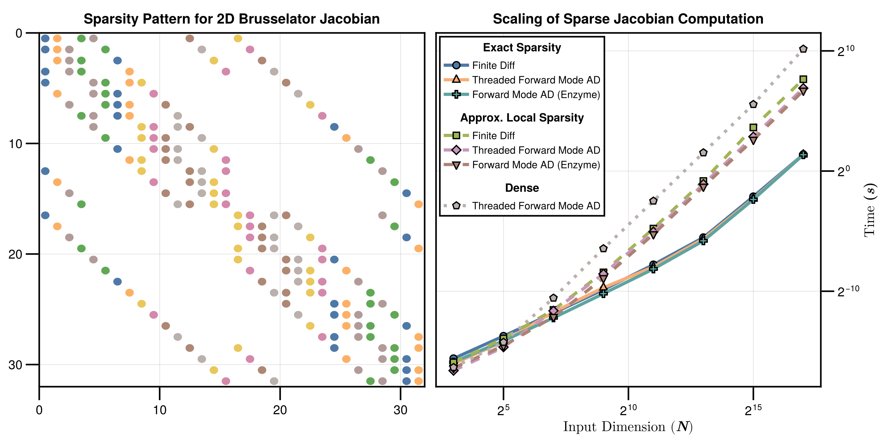
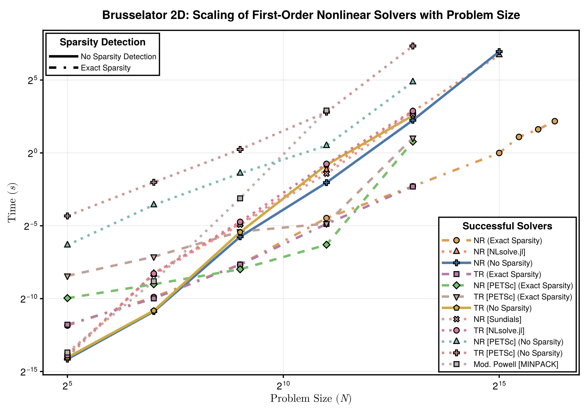

Ill-Conditioned Nonlinear System Work-Precision Diagrams
Setup
Fetch required packages
using NonlinearSolve, SparseDiffTools, LinearAlgebra, SparseArrays, DiffEqDevTools,
CairoMakie, Symbolics, BenchmarkTools, PolyesterForwardDiff, LinearSolve, Sundials
import NLsolve, MINPACK
RUS = RadiusUpdateSchemes;
BenchmarkTools.DEFAULT_PARAMETERS.seconds = 0.5;Define a utility to timeout the benchmark after a certain time.
# Taken from ReTestItems.jl
function timeout(f, timeout)
cond = Threads.Condition()
timer = Timer(timeout) do tm
close(tm)
ex = ErrorException("timed out after $timeout seconds")
@lock cond notify(cond, ex; error=false)
end
Threads.@spawn begin
try
ret = $f()
isopen(timer) && @lock cond notify(cond, ret)
catch e
isopen(timer) && @lock cond notify(cond, CapturedException(e, catch_backtrace()); error=true)
finally
close(timer)
end
end
return @lock cond wait(cond) # will throw if we timeout
endtimeout (generic function with 1 method)Define the Brussletor problem.
brusselator_f(x, y) = (((x - 3 // 10) ^ 2 + (y - 6 // 10) ^ 2) ≤ 0.01) * 5
limit(a, N) = ifelse(a == N + 1, 1, ifelse(a == 0, N, a))
function init_brusselator_2d(xyd, N)
N = length(xyd)
u = zeros(N, N, 2)
for I in CartesianIndices((N, N))
x = xyd[I[1]]
y = xyd[I[2]]
u[I, 1] = 22 * (y * (1 - y))^(3 / 2)
u[I, 2] = 27 * (x * (1 - x))^(3 / 2)
end
return u
end
function generate_brusselator_problem(N::Int; sparsity = nothing, kwargs...)
xyd_brusselator = range(0; stop = 1, length = N)
function brusselator_2d_loop(du_, u_, p)
A, B, α, δx = p
α = α / δx ^ 2
du = reshape(du_, N, N, 2)
u = reshape(u_, N, N, 2)
@inbounds @simd for I in CartesianIndices((N, N))
i, j = Tuple(I)
x, y = xyd_brusselator[I[1]], xyd_brusselator[I[2]]
ip1, im1 = limit(i + 1, N), limit(i - 1, N)
jp1, jm1 = limit(j + 1, N), limit(j - 1, N)
du[i, j, 1] = α * (u[im1, j, 1] + u[ip1, j, 1] + u[i, jp1, 1] + u[i, jm1, 1] -
4u[i, j, 1]) +
B + u[i, j, 1] ^ 2 * u[i, j, 2] - (A + 1) * u[i, j, 1] +
brusselator_f(x, y)
du[i, j, 2] = α * (u[im1, j, 2] + u[ip1, j, 2] + u[i, jp1, 2] + u[i, jm1, 2] -
4u[i, j, 2]) +
A * u[i, j, 1] - u[i, j, 1] ^ 2 * u[i, j, 2]
end
return nothing
end
p = (3.4, 1.0, 10.0, step(xyd_brusselator))
u0 = init_brusselator_2d(xyd_brusselator, N)
nlfunc = NonlinearFunction(brusselator_2d_loop; sparsity)
return NonlinearProblem(nlfunc, vec(u0), p; kwargs...)
endgenerate_brusselator_problem (generic function with 1 method)function __ad_backend(sparsity, psize, ck)
if sparsity === nothing
if psize ≥ 16
return AutoPolyesterForwardDiff(; chunksize = ck)
else
return AutoForwardDiff(; chunksize = ck)
end
else
if psize ≥ 16
return AutoSparsePolyesterForwardDiff(; chunksize = ck)
else
return AutoSparseForwardDiff(; chunksize = ck)
end
end
end
function __set_ad_chunksize(solver::GeneralizedFirstOrderAlgorithm{CJ, N}, ck,
sparsity, psize) where {CJ, N}
ad = __ad_backend(sparsity, psize, ck)
return GeneralizedFirstOrderAlgorithm{CJ, N}(; solver.descent, solver.linesearch,
solver.trustregion, jacobian_ad = ad, solver.max_shrink_times, solver.forward_ad,
solver.reverse_ad)
end
function __set_ad_chunksize(solver::ApproximateJacobianSolveAlgorithm{CJ, N}, ck,
sparsity, psize) where {CJ, N}
ad = __ad_backend(sparsity, psize, ck)
initialization = solver.initialization isa NonlinearSolve.TrueJacobianInitialization ?
NonlinearSolve.TrueJacobianInitialization(NonlinearSolve.FullStructure(), ad) : solver.initialization
return ApproximateJacobianSolveAlgorithm{CJ, N}(; solver.descent, solver.linesearch,
solver.trustregion, solver.update_rule, solver.max_shrink_times, solver.max_resets,
initialization, solver.reinit_rule)
end
function __set_ad_chunksize(solver::SimpleNewtonRaphson, ck, sparsity, psize)
solver.autodiff === nothing || return solver
autodiff = __ad_backend(nothing, psize, ck)
return SimpleNewtonRaphson(; autodiff)
end
function __set_ad_chunksize(solver::SimpleTrustRegion, ck, sparsity, psize)
solver.autodiff === nothing || return solver
autodiff = __ad_backend(nothing, psize, ck)
return SimpleTrustRegion(; autodiff)
end
__set_ad_chunksize(solver, ck, sparsity, psize) = solver__set_ad_chunksize (generic function with 5 methods)Scaling of Sparsity Detection Algorithm
We increase the problem size, and compute the jacobian 10 times similar to a real workload where the jacobian is computed several times and amortizes the cost for computing the sparsity pattern.
test_problem = generate_brusselator_problem(4)
bruss_f!, u0 = (du, u) -> test_problem.f(du, u, test_problem.p), test_problem.u0
y = similar(u0)
sd = SymbolicsSparsityDetection()
adtype = AutoSparseFiniteDiff()
J = sparse_jacobian(adtype, sd, bruss_f!, y, u0)
colors = matrix_colors(J)
begin
J_ = copy(J)
rows = rowvals(J)
vals = nonzeros(J)
for j in 1:size(J, 2)
for i in nzrange(J, j)
row = rows[i]
J_[j, row] = colors[j] # spy does a ordering I can't figure out. so transposing it here
end
end
end
function cache_and_compute_10_jacobians(adtype, sd, f!::F, y, x) where {F}
cache = sparse_jacobian_cache(adtype, sd, f!, y, x)
J = init_jacobian(cache)
for i in 1:10
sparse_jacobian!(J, adtype, cache, f!, y, x)
end
return J
end
Ns = [2^i for i in 1:7]
sd = [SymbolicsSparsityDetection(), ApproximateJacobianSparsity(; ntrials = 3)]
adtypes = [AutoSparseFiniteDiff(), AutoSparsePolyesterForwardDiff(; chunksize = 8)]
algs = Iterators.product(sd, adtypes)
times = Matrix{Float64}(undef, length(Ns), length(algs) + 1)
for (i, N) in enumerate(Ns)
@info N
test_problem = generate_brusselator_problem(N)
bruss_f!, u0 = (du, u) -> test_problem.f(du, u, test_problem.p), test_problem.u0
y = similar(u0)
for (j, (sd, adtype)) in enumerate(algs)
times[i, j] = @belapsed $cache_and_compute_10_jacobians($adtype, $sd, $bruss_f!, $y, $u0)
@info times[i, j]
end
sd, adtype = NoSparsityDetection(), AutoPolyesterForwardDiff(; chunksize = 8)
times[i, end] = @belapsed $cache_and_compute_10_jacobians($adtype, $sd, $bruss_f!, $y, $u0)
@info times[i, end]
endPlotting the results.
fig = begin
cycle = Cycle([:marker], covary = true)
plot_theme = Theme(Lines = (; cycle), Scatter = (; cycle))
with_theme(plot_theme) do
fig = Figure(; size = (1400, 1400 * 0.5))
ax = Axis(fig[1, 1]; title = "Sparsity Pattern for 2D Brusselator Jacobian",
titlesize = 22, titlegap = 10,
xticksize = 20, yticksize = 20, xticklabelsize = 20, yticklabelsize = 20,
xtickwidth = 2.5, ytickwidth = 2.5, spinewidth = 2.5, yreversed = true)
spy!(ax, J_; markersize = 12, marker = :circle, framecolor = :lightgray,
colormap = :berlin)
ax = Axis(fig[1, 2]; title = "Scaling of Sparse Jacobian Computation Algorithms",
titlesize = 22, titlegap = 10, xscale = log2, yscale = log2,
xticksize = 20, yticksize = 20, xticklabelsize = 20, yticklabelsize = 20,
xtickwidth = 2.5, ytickwidth = 2.5, spinewidth = 2.5,
xlabel = L"Input Dimension ($\mathbf{N}$)", ylabel = L"Time $\mathbf{(s)}$", xlabelsize = 22,
ylabelsize = 22, yaxisposition = :right)
colors = cgrad(:berlin, length(algs) + 1; categorical = true)
line_list = []
scatter_list = []
Ns_ = Ns .^ 2 .* 2
push!(line_list,
lines!(
ax, Ns_, times[:, 1], color = colors[1], linewidth = 3, linestyle = :dash))
push!(
scatter_list, scatter!(ax, Ns_, times[:, 1], color = colors[1], strokewidth = 2, markersize = 16))
push!(line_list, lines!(ax, Ns_, times[:, 2], color = colors[2], linewidth = 3))
push!(
scatter_list, scatter!(ax, Ns_, times[:, 2], color = colors[2], strokewidth = 2, markersize = 16))
push!(line_list,
lines!(
ax, Ns_, times[:, 3], color = colors[3], linewidth = 3, linestyle = :dash))
push!(
scatter_list, scatter!(ax, Ns_, times[:, 3], color = colors[3], strokewidth = 2, markersize = 16))
push!(line_list, lines!(ax, Ns_, times[:, 4], color = colors[4], linewidth = 3))
push!(
scatter_list, scatter!(ax, Ns_, times[:, 4], color = colors[4], strokewidth = 2, markersize = 16))
push!(line_list,
lines!(
ax, Ns_, times[:, 5], color = colors[5], linewidth = 3, linestyle = :dot))
push!(
scatter_list, scatter!(ax, Ns_, times[:, 5], color = colors[5], strokewidth = 2, markersize = 16))
group_symbolics = [
[
LineElement(; color = line_list[idx].color,
linestyle = line_list[idx].linestyle,
linewidth = line_list[idx].linewidth),
MarkerElement(; color = scatter_list[idx].color,
marker = scatter_list[idx].marker,
strokewidth = scatter_list[idx].strokewidth,
markersize = scatter_list[idx].markersize)
]
for idx in [1, 3]]
group_approx = [
[
LineElement(; color = line_list[idx].color,
linestyle = line_list[idx].linestyle,
linewidth = line_list[idx].linewidth),
MarkerElement(; color = scatter_list[idx].color,
marker = scatter_list[idx].marker,
strokewidth = scatter_list[idx].strokewidth,
markersize = scatter_list[idx].markersize)
]
for idx in [2, 4]]
legend_polyester = [
[
LineElement(; color = line_list[5].color,
linestyle = line_list[5].linestyle,
linewidth = line_list[5].linewidth),
MarkerElement(; color = scatter_list[5].color,
marker = scatter_list[5].marker,
strokewidth = scatter_list[5].strokewidth,
markersize = scatter_list[5].markersize)
]
]
axislegend(ax,
[group_symbolics, group_approx, legend_polyester],
[
["FiniteDiff", "ForwardDiff"],
["FiniteDiff", "PolyesterForwardDiff"],
["PolyesterForwardDiff"]
],
["Symbolic Sparsity", "Approx. Sparsity", "No Sparsity"];
position = :rb, framevisible = true, framewidth = 2.5, titlesize = 16,
labelsize = 16, patchsize = (40.0f0, 20.0f0))
fig
end
end
save("brusselator_sparse_jacobian_scaling.svg", fig)CairoMakie.Screen{SVG}Scaling with Problem Size
First, let us experiment the scaling of each algorithm with the problem size.
Ns = 2 .^ (2:7)
solvers_scaling = [
(; pkg = :nonlinearsolve, sparsity = :none, name = "NR (Dense)", alg = NewtonRaphson(; linsolve = nothing)),
(; pkg = :nonlinearsolve, sparsity = :approx, name = "NR (Approx. Sparse)", alg = NewtonRaphson(; linsolve = nothing)),
(; pkg = :nonlinearsolve, sparsity = :exact, name = "NR (Exact Sparse)", alg = NewtonRaphson(; linsolve = nothing)),
(; pkg = :wrapper, sparsity = :none, name = "NR (NLsolve.jl)", alg = NLsolveJL(; method = :newton, autodiff = :forward)),
(; pkg = :wrapper, sparsity = :none, name = "Mod. NR (Sundials)", alg = KINSOL()),
(; pkg = :nonlinearsolve, sparsity = :none, name = "TR (Dense)", alg = TrustRegion(; radius_update_scheme = RUS.NLsolve, linsolve = nothing)),
(; pkg = :nonlinearsolve, sparsity = :approx, name = "TR (Approx. Sparse)", alg = TrustRegion(; radius_update_scheme = RUS.NLsolve, linsolve = nothing)),
(; pkg = :nonlinearsolve, sparsity = :exact, name = "TR (Exact Sparse)", alg = TrustRegion(; radius_update_scheme = RUS.NLsolve, linsolve = nothing)),
(; pkg = :wrapper, sparsity = :none, name = "TR (NLsolve.jl)", alg = NLsolveJL(; autodiff = :forward)),
(; pkg = :wrapper, sparsity = :none, name = "MINPACK", alg = CMINPACK()),
]
runtimes_scaling = zeros(length(solvers_scaling), length(Ns)) .- 1
for (i, N) in enumerate(Ns)
prob_dense = generate_brusselator_problem(N)
prob_approx_sparse = generate_brusselator_problem(N;
sparsity = ApproximateJacobianSparsity())
prob_exact_sparse = generate_brusselator_problem(N;
sparsity = SymbolicsSparsityDetection())
@info "Benchmarking N = $N"
for (j, solver) in enumerate(solvers_scaling)
ptype = solver.sparsity
alg = solver.alg
name = solver.name
if ptype == :none
prob = prob_dense
elseif ptype == :approx
prob = prob_approx_sparse
elseif ptype == :exact
prob = prob_exact_sparse
end
if (j > 1 && runtimes_scaling[j - 1, i] == -1) || (alg isa CMINPACK && N > 32) ||
(alg isa KINSOL && N > 64) ||
(alg isa NLsolveJL && N > 64 && alg.method == :trust_region) ||
(alg isa GeneralizedFirstOrderAlgorithm{nothing, :TrustRegion} && N > 64)
# The last benchmark failed so skip this too
runtimes_scaling[j, i] = NaN
@warn "$(name): Would Have Timed out"
else
alg_concrete = __set_ad_chunksize(alg, NonlinearSolve.pickchunksize(prob.u0),
prob.f.sparsity, length(prob.u0))
function __benchmark_function()
sol = solve(prob, alg_concrete; abstol=1e-6, reltol=1e-6,
termination_condition=AbsNormTerminationMode())
runtimes_scaling[j, i] = @belapsed solve($prob, $alg_concrete; abstol=1e-6,
reltol=1e-6, termination_condition=$AbsNormTerminationMode())
@info "$(name): $(runtimes_scaling[j, i]) | $(norm(sol.resid, Inf)) | $(sol.retcode)"
end
timeout(__benchmark_function, 600)
if runtimes_scaling[j, i] == -1
@warn "$(name): Timed out"
runtimes_scaling[j, i] = NaN
end
end
end
println()
endPlot the results.
fig = begin
ASPECT_RATIO = 0.7
WIDTH = 1400
HEIGHT = round(Int, WIDTH * ASPECT_RATIO)
STROKEWIDTH = 2.5
cycle = Cycle([:marker], covary = true)
colors = cgrad(:berlin, length(solvers_scaling); categorical = true)
theme = Theme(Lines = (cycle = cycle,), Scatter = (cycle = cycle,))
LINESTYLES = Dict(
(:nonlinearsolve, :none) => :solid,
(:nonlinearsolve, :approx) => Linestyle([0.5, 1.0, 1.5, 2.5]),
(:nonlinearsolve, :exact) => :dashdot,
(:simplenonlinearsolve, :none) => :dash,
(:wrapper, :none) => :dot,
)
Ns_ = Ns .^ 2 .* 2
with_theme(theme) do
fig = Figure(; size = (WIDTH, HEIGHT))
ax = Axis(fig[1, 1:3], ylabel = L"Time ($s$)", xlabel = L"Problem Size ($N$)",
xscale = log2, yscale = log2, xlabelsize = 22, ylabelsize = 22,
xticklabelsize = 20, yticklabelsize = 20, xtickwidth = STROKEWIDTH,
ytickwidth = STROKEWIDTH, spinewidth = STROKEWIDTH)
ls, scs = [], []
for (i, solver) in enumerate(solvers_scaling)
linestyle = LINESTYLES[(solver.pkg, solver.sparsity)]
l = lines!(Ns_, runtimes_scaling[i, :]; linewidth = 5, color = colors[i],
linestyle)
sc = scatter!(Ns_, runtimes_scaling[i, :]; markersize = 16, strokewidth = 2,
color = colors[i])
push!(ls, l)
push!(scs, sc)
end
main_legend = [
[
LineElement(; color = ls[idx].color, linestyle = ls[idx].linestyle,
linewidth = ls[idx].linewidth),
MarkerElement(; color = scs[idx].color, marker = scs[idx].marker,
markersize = scs[idx].markersize, strokewidth = scs[idx].strokewidth)
]
for idx in 1:length(solvers_scaling)
]
sparsity_legend = [
LineElement(; linestyle = :solid, linewidth = 5),
LineElement(; linestyle = Linestyle([0.5, 1.0, 1.5, 2.5]), linewidth = 5),
LineElement(; linestyle = :dashdot, linewidth = 5),
]
Legend(fig[2, 1:2], main_legend, [s.name for s in solvers_scaling], "Solvers";
framevisible=true, framewidth = STROKEWIDTH, orientation = :horizontal,
titlesize = 16, nbanks = 3, labelsize = 16,
tellheight = true, tellwidth = false, patchsize = (40.0f0, 20.0f0))
Legend(fig[2, 3], sparsity_legend, ["No Sparsity Detection", "Approx. Sparsity", "Exact Sparsity"],
"Sparsity Detection"; framevisible=true, framewidth = STROKEWIDTH,
orientation = :horizontal, titlesize = 16, nbanks = 3, labelsize = 16,
tellheight = true, tellwidth = false, patchsize = (40.0f0, 20.0f0))
fig[0, :] = Label(fig,
"Brusselator 2D: Scaling of First-Order Nonlinear Solvers with Problem Size",
fontsize = 24, tellwidth = false, font = :bold)
return fig
end
end
save("brusselator_scaling.svg", fig)CairoMakie.Screen{SVG}